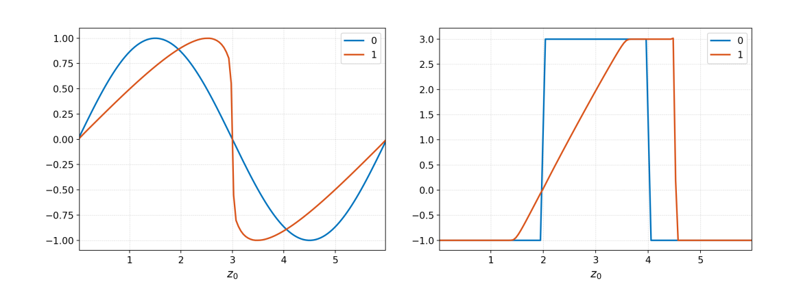
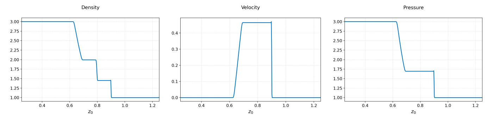
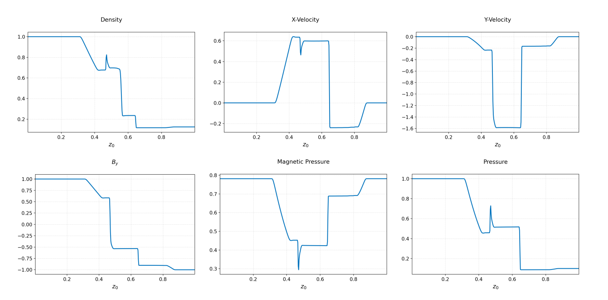

Research note · Numerical methods
A Grimoire of Definitions, Identities, Equation Systems, and all That
This research note aims to collect properties of classes of equations that Lanyon can solve, especially those for which our neurosymbolic system generates formal proofs of correctness.
This is an ever-growing grimoire1 of definitions, identites, and equation systems that are useful in understanding various aspects of computational physics and numerical schemes. Lanyon can solve each of the equations listed below (and many more complicated ones). This research note aims to collect properties of classes of equations that Lanyon can solve, especially those for which our neurosymbolic system generates formal proofs of correctness.
The Ultimate Discrete Scheme and the No Free Lunch Principle
Computational physics allows us to study physical systems using computers. However, computational physics itself lives at the intersection of theoretical physics, applied mathematics and computer science. The advent of artificial intellegence (AI) has necessitated the addition of a fourth pillar: automatic theorem provers, and all the mathematics that goes into them2. Lanyon combines all four of these vast areas of human intellectual achievement to produce mathematically correct, and physically accurate, models of the world.
One can consider computational physics as the study of the physics of discrete systems. Note this is the reverse of how one applies computational physics, that is, uses it to study physical systems. In this sense, computational physics has nothing to do with the “real world” per-se but is a purely mathematical field that studies a specific type of problem inspired by physics. One hopes that in certain limits the discrete world converges to the physical world. However, that is not a given.
Lanyon aims to ensure that the discrete computational representations it builds of the physical world provably satisfy certain mathematical correctness properties that are required to ensure that the models accurately describe the problems one wishes to study. The choice of the words “computational representations” (in the plural) is delibrate: for a given unique physical phenomenon, there are many discrete representations, each suitable for a specific task at hand. A representation that works in one case may not work in another. Hence, Lanyon provides powerful means for rapidly constructing the best representation for the problem one is interested in.
The Ultimate Discrete Scheme
An imaginary hypothetical “Ultimate Discrete Scheme” (UDS) must possess the following three properties
-
Robustness The scheme must be robust: capture shocks, maintain positivity, preserve monotonicity, satisfy involutions (divergence constraints), properly preserve energy partition.
-
Accuracy Provide low dissipation for smooth high-\( k \) modes to properly simulate turbulence. Converge quickly to give accurate results when needed
-
Efficiency Run rapidly for modest resolutions. Do interesting physics on a laptop. Use GPUs and other hardware accelerators for larger simulations. Allow performance of 1000s of simulations.
Sadly, such a discrete scheme does not exist. Many of the goals are contradictory: for example, highly accurate schemes are not robust. This particularly shows up when studying turbulence, for example, in aircraft or rocket engines, where turbulent transport is critical to control, in order to get high efficiencies. However, schemes that are good for turbulence are not good for shocks. Vice-versa, shock-capturing schemes that are essential for supersonic or hypersonic aircraft and missiles tend to over-damp turbulent flows.
Another example: one can construct schemes that satisfy certain indirect properties of an equation system (for example, \( L_2 \)-norm of the distribution function of a collisionless kinetic system). However, these schemes are marginally unstable and produce spurious high-\( k \) noise that can ruin simulations. Robustness forces us to choose schemes that damp the \( L_2 \)-norm.
This feature of the discrete world, namely that ensuring that one property is satisfied results in another property being violated, is common across all of computational physics and engineering. This gives rise to the No Free Lunch Principle:
The No Free Lunch Principle
No Free Lunch Principle: Any scheme which attempts to ensure that a property of the continuous system is satified invariably results in violations of other properties, or a degradation of solution quality.
A consquence of the No Free Lunch Principle is that there is no universally good numerical method: one must choose the best method based on the properties that are important to preserve for the problem at hand. For example, the FDTD method is excellent for studying vast numbers of problems in electromagnetism, but not for multi-fluid simulations of plasmas. Similarly, a shock-capturing method is essential for supersonic and other high-energy phenomena, but they often over damp turbulent structures. Selecting a proper scheme is a complex process and requires deep knowledge of the use of these schemes in production problems. It is not enough to merely run a few simple test problems.
Lanyon encodes this knowledge based on decades of our collective experience, gained in studying the properties of various methods and using them in difficult production problems.
Definitions and Identities
Hyperbolic Partial Differential Equations
[Hyperbolic Partial Differential Equations]: Consider a general system of equations of the form
$$ \frac{\partial Q}{\partial t} + \frac{\partial F}{\partial x} = 0 $$where \( Q \) is the vector of the conserved quantities and \( F = F(Q) \) is the flux function in the \( x \)-direction. This system is called hyperbolic if the flux Jacobian, \( \partial F /\partial Q \), has real eigenvalues and a complete set of right eigenvectors.
This definition seems very technical. Informally, a hyperbolic PDE is one in which disturbances in a uniform background propagate at finite speed without any damping.
Quasilinear Form of Hyperbolic PDEs
The hyperbolic PDE written above is its conservative form. Often it is instead easier to work with the quasilinear form of the equation:
$$ \frac{\partial V}{\partial t} + A \frac{\partial V}{\partial x} = 0 $$where $V$ is a vector of the primitive quantities and A is the quasilinear Jacobian matrix. In a sense, this system of equations is actually more general than the conservation law form in that several systems, like the propagation of acoustic waves in an inhomogenous media, can’t be written in the conservation law form. We call a system of equation written in the quasilinear form hyperbolic if the $A$ matrix has real eigenvalues and a complete set of right eigenvectors. Often it is much easier, for example, for the Euler and ideal MHD equations, to actually write and work with the quasilinear form directly.
We can always transform an equation written in the conservation law form into the quasilinear form. To do this consider the invertible transform $Q = \varphi(V)$. Using this, the conservation law is transformed into
$$ \frac{\partial V}{\partial t} + (\varphi')^{-1}\ (DF) \varphi' \frac{{\partial V}}{\partial x} = 0 $$where $\varphi’$ is the Jacobian matrix of the transformation and $DF \equiv \partial F/\partial Q$ is the flux Jacobian. Comparing this to the quasilinear form we see that the quasilinear matrix is related to the flux Jacobian by
$$ A = (\varphi')^{-1} (DF) \varphi' $$This clearly shows that the eigenvalues of the flux Jacobian are the same as those of the quasilinear matrix while the right and left eigenvectors can be computed using $\varphi’ {r}^p$ and ${l}^p(\varphi’)^{-1}$ respectively.
Flux-Jump Identity
[Flux-Jump Identity]: If \( A^\pm \Delta Q \) are the right- and left-going fluctuations, then
$$ A^+\Delta Q_{R,L} + A^-\Delta Q_{R,L} = F(Q_R)-F(Q_L). $$For linear systems of hyperbolic PDEs the fluctuations are computed as
$$ A^\pm\Delta Q_{R,L} = \sum_p r^p \lambda^\pm_p l^p(Q_R-Q_L). $$For nonlinear systems the fluctuations can be computed in various ways, for example, using a local linearization (Roe Averages). Independent of how these are computed the flux-jump identity must be satified to obtain a physically consistent scheme.
Riemann Problem
The Riemann problem is a fundamental problem in the study of hyperbolic PDEs. It is an initial-value problem that looks at the decomposition of an initial discontinuity at $x=0$. For nonlinear hyperbolic PDEs the structure of the solutions can be surprisingly complicated. For several nonlinear hyperbolic PDEs one can construct the exact solution to the Riemann problem, though this is a highly non-trivial task, and often involves complex root finding and nonlinear algebraic solves.
Formally, the Riemann problem can be stated as follows. For the hyperbolic PDE
$$ \frac{\partial Q}{\partial t} + \frac{\partial F}{\partial x} = 0 $$find $Q(x,t)$ for $t>0$ on $-\infty < x < \infty$ given the initial conditions
$$ \begin{align} Q(x,0) &= Q_L \quad x<0 \\ Q(x,0) &= Q_R \quad x>0. \end{align} $$Informally, the Riemann problem asks how an initial discontinuity in 1D breaks apart. Depending on the equation system, epecially for nonlinear systems like Euler and ideal MHD, the structure of the Riemann problem can be extremely complex.
Weak Solutions
Discontinuous solutions lead us to consider the notion of weak solutions of hyperbolic PDEs. These are derived by multiplying the general hyperbolic PDE for $Q(x,t)$ by a compact, smooth function $\phi(x,t)$ (that is, a function that has smooth derivatives and vanishes outside some bounded region) and integrating over all time and space:
$$ \int_0^\infty \int_{-\infty}^\infty \phi(x,t) \bigg[\frac{\partial Q}{\partial t} + \frac{\partial F}{\partial x}\bigg]\thinspace dx\thinspace dt = 0. $$Integrating by parts we get the weak form
$$ \int_0^\infty \int_{-\infty}^\infty \bigg[\frac{\partial \phi}{\partial t} Q + \frac{\partial \phi}{\partial x} F\bigg]\thinspace dx\thinspace dt = - \int_{-\infty}^\infty \phi(x,0) Q(x,0) dx. $$Notice that in this equation there are no derivatives on $Q(x,t)$, and as $\phi(x,t)$ is smooth it can be safely differentiated. This leads to the defintion of of a weak solution:
[Weak Solution] A function $Q(x,t)$ is said to be a weak solution if it satisfies the weak form above for all compact and smooth $\phi(x,t)$.
Weak solutions arise almost always in the solution of hyperbolic PDEs. Examples of such solutions are shocks and oher discontinuities.
A Collection of Equation Systems
The Advection-Diffusion Equation
$$ \frac{\partial f}{\partial t} + \nabla\cdot(\mathbf{u} f) = \nabla\cdot(\mathbf{D}\cdot\nabla f). $$In this equation \( \mathbf{u} \) is the advection velocity, \( \mathbf{D} \) is the diffusion tensor, and \( f(x,t) \) is the advected scalar quantity. The isotropic diffusion limit is obtained by setting the diffusion tensor to the metric tensor, $\mathbf{D} = \mathbf{g}.$ An example of an anisoptropic diffusion tensor comes from plasma physics. Let $\mathbf{b}$ be a unit vector along the local magnetic field. Then, in certain approximation we have
$$ \mathbf{D} = \kappa_\perp (\mathbf{g}-\mathbf{b}\otimes\mathbf{b}) + \kappa_\parallel \mathbf{b}\otimes\mathbf{b}. $$In general, for a magnetized plasmas, $\kappa_\perp/\kappa_\parallel \ll 1$. To a good approximation we can completely ignore the diffusion perpendicular to the field and take $\kappa_\perp = 0$.
Maxwell Equations of Electromagnetism
$$ \begin{align} \frac{\partial \mathbf{B}}{\partial t} + \nabla\times\mathbf{E} &= 0 \\ \epsilon_0\mu_0\frac{\partial \mathbf{E}}{\partial t} - \nabla\times\mathbf{B} &= -\mu_0\mathbf{J} \end{align} $$along with the divergence relations
$$ \begin{align} \nabla\cdot\mathbf{E} &= \frac{\varrho_c}{\epsilon_0} \\ \nabla\cdot\mathbf{B} &= 0. \end{align} $$Here, \( \mathbf{E} \) is the electric field, \( \mathbf{B} \) is the magnetic flux density, \( \epsilon_0 \), \( \mu_0 \) are permittivity and permeability of free space, and \( \mathbf{J} \) and \( \varrho_c \) are specified currents and charges respectively. The speed of light is determined from \( c=1/(\mu_0\epsilon_0)^{1/2} \).
Perfectly Hyperbolic Maxwell Equations
An extension of the Maxwell equations that incorporates the divergence conditions is called the Perfectly Hyperbolic Maxwell Equations (PHM).
$$ \begin{align} \frac{\partial \mathbf{B}}{\partial t} + \nabla\times\mathbf{E} + \gamma \nabla\psi &= 0 \\ \epsilon_0\mu_0\frac{\partial \mathbf{E}}{\partial t} - \nabla\times\mathbf{B} + \chi \nabla \phi &= -\mu_0\mathbf{J} \\ \frac{1}{\chi}\frac{\partial \phi}{\partial t} + \nabla\cdot\mathbf{E} &= \frac{\varrho_c}{\epsilon_0} \\ \frac{\epsilon_0\mu_0}{\gamma}\frac{\partial \psi}{\partial t} + \nabla\cdot\mathbf{B} &= 0. \end{align} $$Here \( \psi \) and \( \phi \) are new scalar fields and \( \gamma \) and \( \chi \) are new propagation speeds. The eigenvalues of the PHM system are \( \{-c\gamma, c\gamma, -c\chi, c\chi, -c, -c, c, c\} \). The PHM ensures that any numerical errors in the divergence conditions are propagated out of the domain at the speeds \( c\gamma \) and \( c\chi \). Reasonable choices for vacuum problems are \( \gamma = \chi = 1 \), which ensures that the errors propagate at the speed of light. For problems in which we have finite charge density the PHM equations are not consistent for correcting the divergence errors in the electric field. In such cases we need to set \( \chi =0 \).
The electromagnetic (EM) field can carry both energy and momentum. The evolution equation for EM energy is:
$$ \frac{\partial }{\partial t} \left( \frac{\mathbf{B}^2}{2\mu_0} + \frac{\epsilon_0\mathbf{E}^2}{2} \right) + \frac{1}{\mu_0}\nabla\cdot\left( \mathbf{E}\times\mathbf{B} \right) = -\mathbf{E}\cdot\mathbf{J}. $$The evolution equation for EM momentum is:
$$ \frac{\partial }{\partial t} \left( \mathbf{E}\times\mathbf{B} \right) + \nabla\cdot \mathbf{T} = -\varrho_c \mathbf{E} - \mathbf{J} \times \mathbf{B} $$Here, \( \mathbf{T} \) is the stress-energy tensor given by
$$ \mathbf{T} = \left( \frac{\mathbf{B}^2}{2\mu_0} + \frac{\epsilon_0\mathbf{E}^2}{2} \right) \mathbf{g} - \left( \epsilon_0 \mathbf{E}\otimes \mathbf{E} + \frac{1}{\mu_0} \mathbf{B}\otimes \mathbf{B} \right) $$Both of these equations are balance laws in the sense that they also involve exchange of energy with charge and current carrying material, for example a plasma.
Maxwell Equations in General Relativity
Though somewhat esoteric, the Maxwell equations in general relativity describe the propagation of the electromagnetic field in the presence of gravity. The best known and validated theory of gravity is Einstein’s General Relativity (GR) that treats spacetime as a four-dimensional manifold with a Lorentzian signature. Maxwell equations take a particularly elegant (and surprising) form when spacetime is decomposed in $1+3$ Arnowitt–Deser–Misner (ADM) formalism. In this formalism Maxwell equation again split into two curl equations:
$$ \begin{align} \frac{\partial \mathbf{B}}{\partial t} + \nabla\times\mathbf{E} &= 0 \\ \frac{\partial \mathbf{D}}{\partial t} - \nabla\times\mathbf{H} &= \varrho_c \boldsymbol{\beta} - \alpha\mathbf{J} \end{align} $$and two divergence equations:
$$ \begin{align} \nabla\cdot\mathbf{D} &= \varrho_c \\ \nabla\cdot\mathbf{B} &= 0. \end{align} $$In contrast to the special-relativistic Maxwell equations listed in the previous section, in the GR Maxwell equation gravity acts like a material medium in that it introduces effective constitutive relations
$$ \begin{align} \mathbf{H} &= \alpha \mathbf{B} - \boldsymbol{\beta}\times\mathbf{D} \\ \mathbf{E} &= \alpha \mathbf{D} + \boldsymbol{\beta}\times\mathbf{B}. \end{align} $$In these equations $\alpha$ is the lapse function, $\boldsymbol{\beta}$ is the shift-vector and the various vector operators are defined in terms of the spatial metric $h_{ij}$. In all, these $10$ quantities ($1+3+6$) represent the effect of gravity in the ADM frame, that in 4D manifold is represented by the $10$ independent components of the 4D metric $g_{ij}.$ Of course, the lapse function, shift-vector and the spatial metric are themselves determined by the solution of the Einstein equations of gravity.
Burgers’ Equation
Burgers’ equation is the simplest scalar nonlinear hyperbolic equation (in the invicid limit). It has a quadratic nonlinearity and serves as a model for more complex equations like the Euler and Navier-Stokes equations.
$$ \frac{\partial f}{\partial t} + \frac{\partial}{\partial x} \left( \frac{1}{2} f^2 \right) = \nu \frac{\partial^2 f}{\partial x^2}. $$This equation has a single eigenvalue, $f$. Hence, the local propagation speed depends on the solution itself, leading to the formation of shocks or rarefactions even if the initial condition is smooth.

The above figure shows that the quadratic nonlinearity in Burgers' equation steepens waves, eventually leading to the formation of shocks. A second class of solution, seen in the right figure above, is the rarefaction wave. It is the correct entropy decaying solution to Burgers’ equation.
The Euler Equations
The Euler equations are a fundamental system of equations that describe invicid fluids. They are not only important in themselves for applications, but also form the basis for more complex systems, including the Navier-Stokes equations, the magnetohydrodyamic (MHD) equations, the multifluid plasma equations, and many others.
The equations consist of the continuity equation
$$ \frac{\partial\rho}{\partial t} + \nabla\cdot(\rho\mathbf{u}) = 0, $$the momentum equation
$$ \frac{\partial}{\partial t}(\rho\mathbf{u}) + \nabla\cdot \left( \rho\mathbf{u}\otimes\mathbf{u} + p\mathbf{g} \right) = 0, $$and the energy equation
$$ \frac{\partial \mathcal{E}}{\partial t} + \nabla\cdot \left[ \mathbf{u}(\mathcal{E}+p) \right] = 0. $$The total energy $\mathcal{E}$ contains two contributions, one from the kinetic energy and the other from the internal energy:
$$ \mathcal{E} = \frac{1}{2} \rho\mathbf{u}\cdot\mathbf{u} + \frac{p}{\gamma-1} $$where $p$ is the scalar pressure. In 1D we can write these equations as
$$ \frac{\partial}{\partial{t}} \begin{bmatrix} \rho \\ \rho u \\ \rho v \\ \rho w \\ E \end{bmatrix} + \frac{\partial}{\partial{x}} \begin{bmatrix} \rho u \\ \rho u^2 + p \\ \rho uv \\ \rho uw \\ (E+p)u \end{bmatrix} = 0. $$The pressure is given by an equation of state (EOS) $p=p(\varepsilon, \rho)$. For an ideal gas the EOS is
$$ p =(\gamma-1)\rho \varepsilon. $$For a neutral fluid, usually we set $\gamma = 1.4$, while for a plasma $\gamma = 5/3$.
Computing the eigensystem of the Euler equations is not trivial. However, the task is made much more tractable by transforming the system to quasilinear form and using a computer algebra system. We find that the eigenvalues are
$$ \lambda^1, \lambda^2, \lambda^3, \lambda^4, \lambda^5 = u-c, u, u, u, u+c, $$where $c$ is the sound-speed given by
$$ c = \sqrt{\frac{\partial p}{\partial \rho} + \frac{p}{\rho^2}\frac{\partial p}{\partial \varepsilon}}. $$In general, to compute the sound speed we need the equation of state (EOS). Sometimes, the EOS is given as an analytical formula, but more often is in tabulated form.
For the ideal gas EOS, we see that
$$ c = \sqrt{\frac{\gamma p}{\rho}}. $$This remains real as long as $\rho > 0$ and $p > 0$. These conditions on density and pressure (the invariant domain) restrict the valid states a fluid can take.
The right eigenvectors are given by the columns of the matrix
$$ R = \begin{bmatrix} 1 & 0 & 0 & 1 & 1 \\ u-c & 0 & 0 & u & u+c \\ v & 1 & 0 & v & v \\ w & 0 & 1 & w & w \\ h-uc & v & w & h-c^2/b & h+uc \end{bmatrix}. $$Here, $h$ is the enthalpy of the fluid given by
$$ h = (E+p)/\rho. $$Also
$$ b = \frac{1}{\rho}\frac{\partial p}{\partial \varepsilon}. $$From this discussion it becomes clear that the Euler equations are an extremely complex, nonlinear system of equations. Things become even more complicated for a general EOS. Of course, further extensions to these fundamental systems are possible, in particular to (special and general) relativistic problems. For high-energy astrophysics problems, in fact, one must use these relativistic extensions to the Euler equations as the energies and speeds encountered in extreme plasma environments (for example, around black holes and neutron stars) can be ultra-relativistic.

The above figure shows an exact solution to the Euler Riemann problem. It consists of a rarefaction fan, a contact discontinuity, and a shock. The Euler equation supports many other rich Riemann problems solutions based on the initial state of the system.
The Ideal MHD Equations
In plasma physics the single most ubiquitous set of equations is the ideal MHD equations. These form the foundation of all of plasma physics, including the theory of equilibrium and stability of tokamaks and stellarators, and the proper understanding of everything from space to astrophysical plasmas.
Ideal MHD is a pre-Maxwell theory in the sense that the displacement currents are ignored (hence, no electromagnetic waves) and the plasma is treated as a conducting fluid. The equations consist of the continuity equation
$$ \frac{\partial\rho}{\partial t} + \nabla\cdot(\rho\mathbf{u}) = 0, $$and the momentum equation
$$ \frac{\partial \mathbf{u}}{\partial t}+\mathbf{u} \cdot \nabla \mathbf{u} +\frac{\nabla p}{\rho} = {\frac{1}{\mu_{0}\rho}(\nabla \times \mathbf{B}) \times \mathbf{B}} $$where $\mathbf{B}$ is the magnetic field. The right-hand side of this equation is a manifestation of the Lorentz force and modifies the motion of the plasma due to the magnetic field. The evolution of the field is determined by the induction equation
$$ \frac{\partial\mathbf{B}}{\partial t} + \nabla\times\mathbf{E} = 0 $$where $\mathbf{E} = -\mathbf{u}\times\mathbf{B}$ (ideal Ohm’s Law). Finally, for an ideal plasma, the pressure evolves according to
$$ \frac{\partial p}{\partial t} + \mathbf{u}\cdot\nabla p = -\gamma p \nabla\cdot\mathbf{u}. $$Using some algebraic manipulations we can show that the momentum equation can be written in the conservative form as
$$ \frac{\partial}{\partial t}(\rho\mathbf{u}) + \nabla\cdot \mathbf{T} = 0 $$where
$$ \mathbf{T} = \rho\mathbf{u}\otimes\mathbf{u} + \left(p + \frac{\mathbf{B}^2}{2\mu_0} \right)\mathbf{g} -\frac{1}{\mu_0} \mathbf{B}\otimes\mathbf{B}. $$is a symmetric second-order tensor describing the momentum flux, and $\mathbf{g}$ is the metric tensor. In abstract index notation we can write this tensor as
$$ T_{ab} = \rho u_a u_b + \left(p + \frac{\mathbf{B}^2}{2\mu_0} \right) g_{ab} -\frac{1}{\mu_0} B_a B_b. $$Some rather hairy manipulations allow us to derive evolution equations for the kinetic-energy
$$ \frac{\partial}{\partial t} \left( \frac{1}{2}\rho\mathbf{u}^2 \right) + \nabla\cdot \left[ \frac{1}{2}\rho\mathbf{u}^2\mathbf{u} + \left(p+\frac{\mathbf{B}^2}{2\mu_0}\right)\mathbf{u} \right] = \left(p+\frac{\mathbf{B}^2}{2\mu_0}\right)\nabla\cdot\mathbf{u} + \frac{1}{\mu_0} \mathbf{u}\cdot \left[ (\mathbf{B}\cdot\nabla)\mathbf{B} \right] $$the internal energy
$$ \frac{\partial}{\partial t}\left(\frac{p}{\gamma-1}\right) +\nabla\cdot \left(\mathbf{u}\frac{p}{\gamma-1}\right)=-p\nabla\cdot\mathbf{u}, $$and the magnetic field energy
$$ \frac{\partial}{\partial t}\left(\frac{\mathbf{B}^2}{2\mu_0} \right) -\nabla\cdot \left( \frac{1}{\mu_0}(\mathbf{u}\cdot\mathbf{B})\mathbf{B} - \frac{\mathbf{B}^2}{2\mu_0}\mathbf{u} \right) = -\frac{\mathbf{B}^2}{2\mu_0}\nabla\cdot\mathbf{u} - \frac{1}{\mu_0}\mathbf{u}\cdot[(\mathbf{B}\cdot\nabla)\mathbf{B}]. $$These evolution equations for the various components of the energy show how energy can be exchanged between various components of the fluid and the field: internal and kinetic energies are exchanged via the fluid compressibility, and kinetic and field energies through a complicated set of terms involving compressibility and currents and the electric field (effectively, an $\mathbf{E}\cdot\mathbf{J}$ term).
Rather neatly, if we add all the components of the energy the right-hand sides all cancel, and we get that the total energy
$$ \mathcal{E} \equiv \frac{1}{2}\rho\mathbf{u}^2 + \frac{p}{\gamma-1} + \frac{\mathbf{B}^2}{2\mu_0} $$evolves as
$$ \frac{\partial \mathcal{E}}{\partial t} + \nabla\cdot \left[ (\mathcal{E}+p^*)\mathbf{u} - \frac{1}{\mu_0}(\mathbf{u}\cdot\mathbf{B})\mathbf{B} \right] = 0 $$where the total (fluid + magnetic) pressure is defined as
$$ p^* \equiv p + \frac{\mathbf{B}^2}{2\mu_0}. $$Of course, the evolution of the total energy equation is very important. However, one should point out that equally important are the evolution of the components of the energy, as these fundamentally determine energization processes, and also how turbulence manifests in MHD. In fact, it is extremely difficult (perhaps impossible) to develop generic numerical schemes that account for both proper transfer between various components of the energy, and also at the same time account for shocks and other features of compressibility. As nature would have it, these are the cutting-edge regimes of interest for modern, high-energy plasma physics.
It is clear that computing the eigensystem of this formidable set of equations is highly non-trivial. However, again, it is easiest to work in the quasilinear form of the equations and use a computer algebra system. One finds that indeed the ideal MHD equation is hyperbolic.

The ideal MHD Riemann problem displays structures even more complicated than the Euler Riemann problem. The classic example problem called Brio-Wu is shown in the figure above. In addition to shocks, rarefactions and contacts, it also shows the formation of a compound wave (the spike-like feature) in the density and other quantities.
The Compressible Navier-Stokes Equations
The compressible Navier-Stokes equations are a fundamental system of equations, describing a vast range of phenomena, including turbulent flows. The equations consist of the continuity equation
$$ \frac{\partial\rho}{\partial t} + \nabla\cdot(\rho\mathbf{u}) = 0, $$the momentum equation (sometimes by itself called the Navier-Stokes equation)
$$ \frac{\partial}{\partial t}(\rho\mathbf{u}) + \nabla\cdot \mathbf{T} = 0, $$and the energy equation
$$ \frac{\partial \mathcal{E}}{\partial t} + \nabla\cdot \left[ \mathbf{u}(\mathcal{E}+p) - \mathbf{u}\cdot\boldsymbol{\tau} + \mathbf{q} \right] = 0. $$The total energy is defined as
$$ \mathcal{E} = \frac{1}{2} \rho\mathbf{u}\cdot\mathbf{u} + \rho \varepsilon. $$This definition is the same as that for Euler equations, written directly in terms of the internal energy-density rather than the pressure.
The tensor $\mathbf{T}$ can be written as
$$ T_{ab} = \rho u_a u_b + p g_{ab} - \tau_{ab} $$where \( \boldsymbol{\tau} \) is the viscous stress-tensor. For a Newtonian fluid this is defined by
$$ \tau_{ab} = \mu\left( \nabla_a u_b + \nabla_b u_a - \frac{2}{3} (\nabla\cdot\mathbf{u}) g_{ab} \right) + \lambda (\nabla\cdot\mathbf{u}) g_{ab} $$and where $\mu$ and $\lambda$ are the shear- and bulk-viscosity, respectively. ($\mu$ is also called the dynamic viscosity. A related quantity, the kinematic viscosity is defined as $\nu = \mu/\rho.$). For most applications one sets $\lambda = 0$. In this case the viscous stress-tensor becomes trace-free. Finally, the heat-flux vector is given by
$$ \mathbf{q} = -k \nabla T. $$where $k$ is the heat conduction coefficient, and $T$ is the temperature.
These equations as written are not closed: we still need to determine the pressure and the internal energy-density $\varepsilon$, and how the temperature is computed. In general, this comes from an equation of state. For ideal fluids we can write these as
$$ \begin{align} p &= \rho R T \\ \varepsilon &= C_v T. \end{align} $$where $C_v$ is the heat-capacity at constant volume, and $R$ is the universal gas constant. Note that as we also have $p = (\gamma-1) \rho\varepsilon$, for an ideal gas we must have $C_v = R/(\gamma-1)$. Often, for air in particular, the heat conduction coefficient is determined from the Prandtl number as it remains nearly constant:
$$ \mathrm{Pr} = \frac{\mu C_p}{k}. $$Here $C_p$ the heat-capacity at constant pressure. For ideal gases, $C_p/C_v = \gamma$, or $C_p - C_v = R$. Hence, once the viscosity is computed (from tables or fits) then this expression determines the conduction coefficient. For air, the Prandtl number is $0.71$, for example. For air at standard sea-level conditions one can use Sutherland’s law to compute the viscosity:
$$ \mu = \mu_0 \left( \frac{T}{T_0} \right)^{3/2} \frac{T_0 + 110}{T + 110}. $$Reference values are $\mu_0 = 1.7894\times 10^{-5}$ kg/(m s) and $T_0 = 288.16$ K. Of course, $R = 287$ J/(kg K), and $\gamma = 1.4.$
These additional equations fully close (besides the physical parameters) the Navier-Stokes equations for ideal gases and typically what are implemented in solvers.
The Incompressible Navier-Stokes Equations
In some situations a fluid can be consider incompressible, that is we assume
$$ \nabla\cdot\mathbf{u} = 0. $$This approximation is often useful, but it has serious limitations (as we show below) in that the reduced system has restricted range of thermodynamics: the pressure no longer is independent but is determined from the incompressiblity condition. In fact, the only dynamical quantity is now the velocity, $\mathbf{u}$. In this limit the density remains constant. The momentum equation becomes
$$ \frac{\partial \mathbf{u}}{\partial t} + \mathbf{u}\cdot \nabla \mathbf{u}+\frac{1}{\rho}\nabla p=\nu \nabla^2 \mathbf{u} $$where $\nu = \mu/\rho$ is the kinematic viscosity. Here we are assuming that $\mu$ is constant. Taking the divergence of this gives the evolution equation for pressure:
$$ \nabla^2 p = - \rho \nabla \cdot [ \mathbf{u}\cdot \nabla \mathbf{u} ]. $$These two equations completely determine the evolution of an incompressible fluid. We can add terms, for example, gravitational forces and buoyancy. A temperature equation can also be evolved, but velocity field is uncoupled from it.
It should be mentioned that this equation is often considered central to the problem of turbulence as it contains the essence of turbulent flows. However, it is possible that without compressibility effects one can not really completely understand turbulence, specially at the shortest wavelength modes. Further, there does not seem to be any direct way to incorporate general equation of state in this system.
References and Footnotes
-
A grimoire is a collection of magic spells and incantations that can be used to conjure up sprits and obtain one’s heart’s desires. This research notes serves as just such a collection of mathematical spells (equations) that can be fed in Lanyon to construct bespoke slovers to simulate any equation one wants, satiating one’s intellecutal curiosity as well as help one in desigining complex systems. ↩︎
-
The mathematics of automatic theorem provers goes back several millenia, to the great works of the Greeks in formalizing logical thinking via syllogisms and elementary logic, and building up the over the centuries into the vast modern literature in logic, type theory, and theoretical computer science. ↩︎